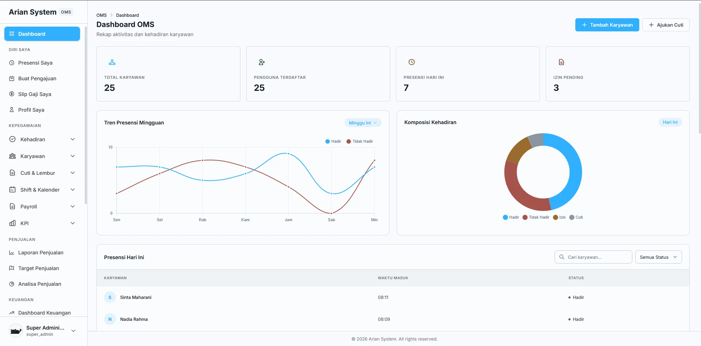
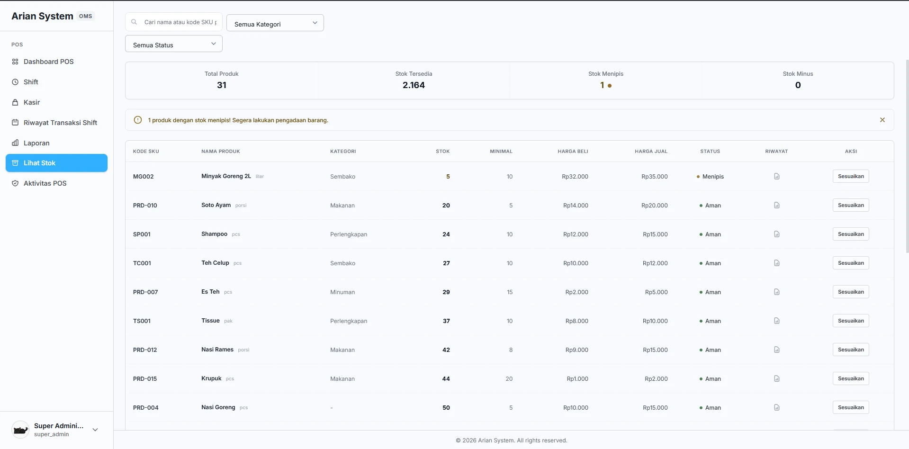
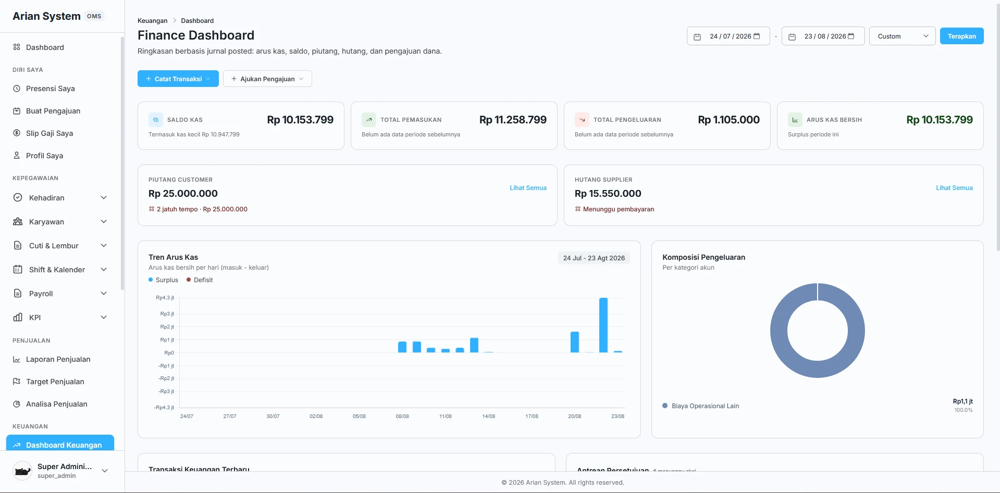
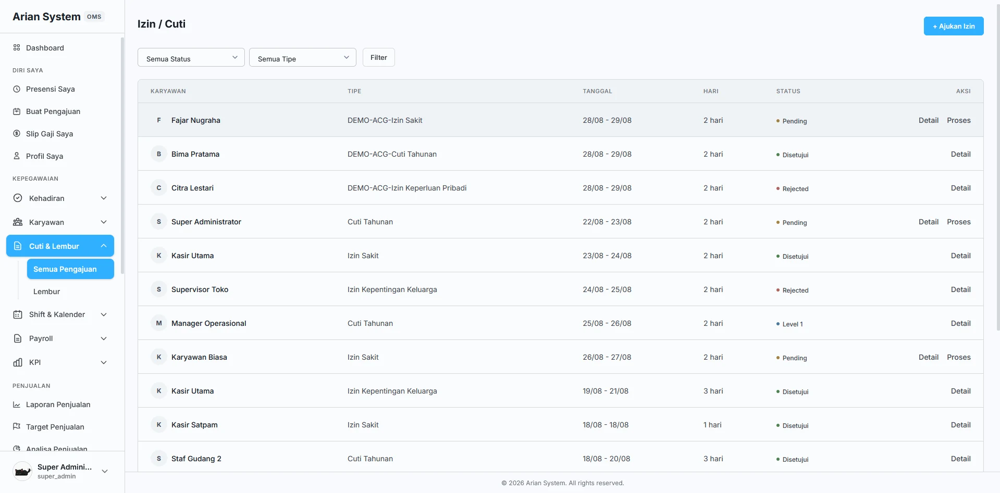
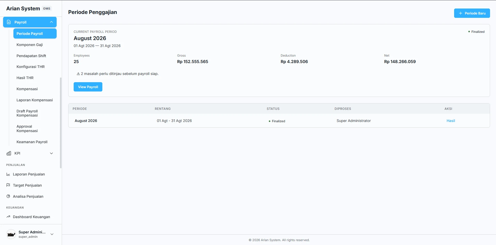
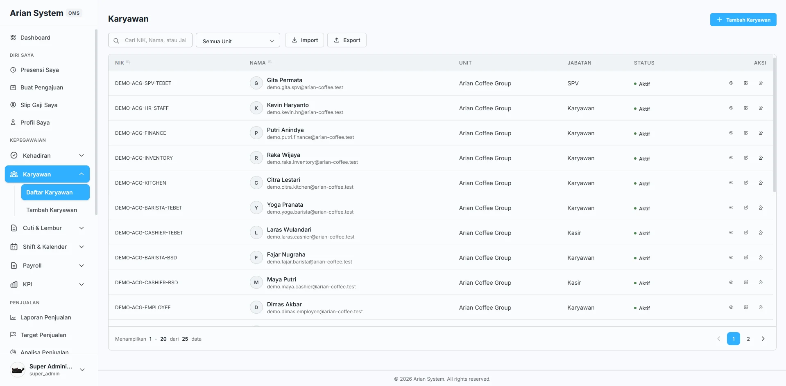

Catatan tidak tercecer.
Transaksi, pergerakan stok, pengajuan, dan pekerjaan operasional berada dalam sistem yang sama.
Penjualan masuk melalui POS. Stok, pekerjaan tim, dan keuangan dapat dikelola dalam sistem yang sama.
UNTUK BISNIS DARISATU SISTEM UNTUK TRANSAKSI,
OPERASIONAL, DAN KONTROL.
THE WORK IS CONNECTED.
THE SYSTEM SHOULD BE TOO.
Saat transaksi, stok, pembelian, tim, payroll, dan keuangan dicatat di tempat berbeda, gambaran bisnis mudah terputus. Arian System menaruh semuanya dalam alur yang bisa dilihat dan ditinjau bersama.
Transaksi, pergerakan stok, pengajuan, dan pekerjaan operasional berada dalam sistem yang sama.
Stok menipis, aktivitas pending, approval, dan laporan terlihat tanpa harus mencarinya satu per satu.
Role, permission, approval, PIN, dan audit trail membantu menjaga tindakan sensitif tetap bisa ditinjau.
TWO WORK SURFACES.
ONE OPERATIONAL SYSTEM.
Kasir memakai POS untuk transaksi dan shift. Di sisi lain, OMS dipakai untuk mengurus stok, pembelian, tim, payroll, keuangan, dan persetujuan.
FROM DAILY ACTIVITY
TO REVIEWABLE DECISIONS.
Pekerjaan harian tidak berhenti sebagai catatan. Tim bisa melihat sinyal penting, mengambil keputusan, lalu menelusuri apa yang sudah terjadi.
Penjualan dan shift terjadi di outlet.
Stok dan status operasional ikut bergerak.
Dashboard dan laporan mengangkat sinyal penting.
Aktivitas sensitif ditinjau oleh role yang tepat.
Keputusan dan perubahan tetap dapat ditelusuri.
CONTROL LIVES INSIDE
THE DAILY WORKFLOW.
Permission mengatur siapa yang boleh bertindak. Approval menentukan siapa yang memeriksa. Audit mencatat apa yang benar-benar terjadi.
Setiap pengguna mendapat akses sesuai pekerjaan dan tanggung jawabnya.
Tindakan penting dapat diperiksa lebih dulu sebelum diselesaikan.
Akses dapat dibatasi berdasarkan outlet dan kebutuhan tiap peran.
Perubahan dan keputusan sensitif tetap tersimpan saat perlu ditinjau kembali.
TAMPILAN PRODUK.
KONTEKS OPERASIONAL.
Bagian ini menampilkan beberapa screenshot Arian System untuk kebutuhan operasional yang berbeda.






BUILT TO GROW WITH
THE OPERATION.
Mulai dari kebutuhan satu outlet. Saat bisnis bertambah besar, Anda bisa menambah kapasitas tanpa membayar kebutuhan multi-outlet terlalu cepat.
Rapikan penjualan, stok, shift, dan data tim.
Tambahkan purchasing, transfer stok, payroll, KPI, dan approval.
Satukan finance, akses per outlet, audit, dan laporan gabungan.
FROM FOUNDATION
TO REVIEWABLE DECISIONS.
Susun fondasi bisnis lebih dulu. Setelah itu, pekerjaan harian, pemantauan, dan keputusan berjalan dalam alur yang sama.
Mulai dengan outlet, karyawan, produk, shift, role, dan permission yang akan dipakai tim.
Tim melakukan presensi, kasir membuka shift, transaksi berjalan, stok bergerak, dan pengajuan masuk.
Dashboard, peringatan stok, transaksi pending, laporan, notifikasi, dan approval membantu tim menentukan prioritas.
Setiap keputusan sensitif memiliki status, approver, permission, dan audit trail yang dapat ditelusuri.
Mulai dari kapasitas yang Anda perlukan sekarang.
UNTUK BISNIS YANG MENATA SATU OUTLET.
UNTUK BISNIS YANG MULAI MEMILIKI BEBERAPA OUTLET.
UNTUK OPERASI MULTI-OUTLET DENGAN KONTROL TERPUSAT.
Butuh lebih dari 10 outlet atau 100 pengguna? Daftar lebih dulu agar kebutuhan di luar paket Scale dapat dibahas bersama tim.
TECHNICAL DECISIONS,
TRANSLATED INTO VALUE.
Beberapa kontrol teknis tersedia untuk membantu tim menjalankan pekerjaan dengan lebih tertib.
Role, approval, PIN, dan audit memberi konteks pada aktivitas sensitif.
Low-stock, pending activity, notification, dan dashboard membantu tim memprioritaskan pekerjaan.
Dukungan PWA dan sinkronisasi membantu produk tetap relevan untuk pekerjaan yang tidak selalu dilakukan dari satu desktop.
Arian System dirancang untuk UMKM dan retail, mulai dari bisnis satu outlet hingga operasi multi-outlet yang membutuhkan kontrol terpusat.
POS dipakai untuk transaksi, kasir, shift, dan pembayaran. OMS dipakai untuk mengelola stok, pembelian, karyawan, payroll, keuangan, approval, laporan, dan audit.
Starter mendukung 1 outlet dan 10 pengguna, Growth hingga 3 outlet dan 30 pengguna, sedangkan Scale hingga 10 outlet dan 100 pengguna.
Bisa. Growth mendukung beberapa outlet, sementara Scale ditujukan untuk operasi multi-outlet dengan akses per outlet dan laporan gabungan.
Role dan permission membatasi akses sesuai tanggung jawab. Pada paket yang mendukungnya, aktivitas penting dapat memerlukan approval dan PIN sebelum dilanjutkan.
Audit trail dan review fraud termasuk dalam paket Scale, bersama role per outlet dan laporan gabungan.
Harga yang dipublikasikan saat ini adalah harga bulanan untuk paket Starter, Growth, dan Scale.
Trial belum ditawarkan pada halaman publik saat ini. Anda dapat mendaftar untuk melihat langkah berikutnya.
Jika kebutuhan Anda lebih dari 10 outlet atau 100 pengguna, daftar lebih dulu agar kapasitas di luar paket Scale dapat dibahas bersama tim.